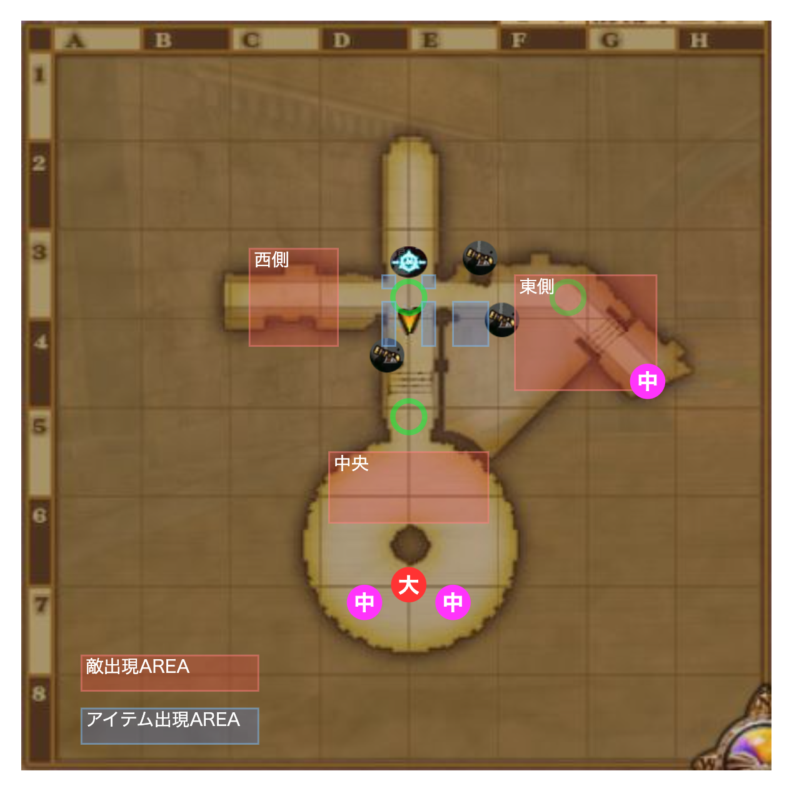

鋼塊の重滅兵団
ボス:鋼塊の痛哭将アボク
- あくま系
- HP: 65万
必要耐性
- 幻惑,転び
- あとは火力もりもり. 戦神のベルト,断罪の指輪,ラストチョーカー
適職
- バトマス,海賊,魔法使いが強い
- 回復も重要,僧侶とか
アイテム湧き場所↓↓
- 中ボスの制圧隊長ゾベエガがしびれ砲弾を落とす.
- どっかんドンガル,ぼくめつしんかんとかはHPが1万くらいある→スーパーハイテンション(SHT)でもワンパンできない.
行動表
| 残り時間 | 場所 | イベント/行動 アイテム係 |
|---|---|---|
| 7:55 開幕 | 結界前 |
|
| 7:45 | 中央 |
|
| 7:30 | 東西 |
|
| 7:15頃 | 中央 |
|
| 7:00 | 東側 |
|
| 6:35 | 東側 |
|
| 6:30~6:25 | 西側 |
|
| 6:20 | 東側 |
|
| 6:00 | 東側 |
|
| 5:40~5:20 | 西側,東側 |
|
| 5:00 | 中央/西側 |
|
| 4:50 | 結果前 |
|
| 4:30 | 結果前/東側 |
|
| 4:09 | 中央サークル |
|
| 3:25 | 中央 |
|
| 3:10 | 結果前 |
|
| 3:00 | 結果前 |
|
| 2:43 | 結果前 |
|
| 2:30 | 東側 |
|
| 1:59 | 中央サークル |
|
| 1:30 | 東側 |
|
| 1:10 | 東西 |
|
| 0:40 | 結果前 |
|